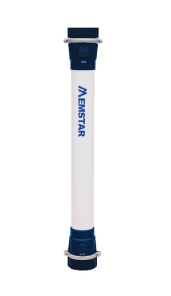
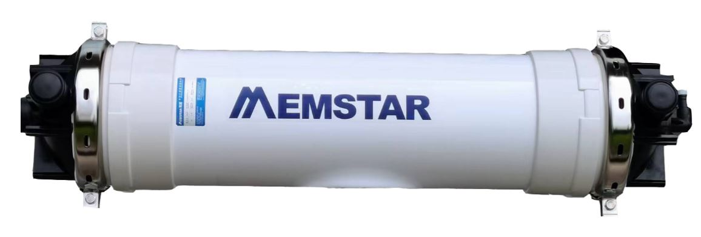
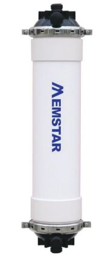
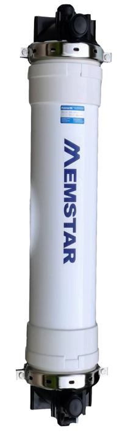

Memstar · 承信代理
UF 外壓式超濾膜
為原水過濾、廢水深度處理與 RO 前端配置 UF 膜單元

產品在流程中的角色
Memstar UF 外壓式超濾膜
承信代理 Memstar PVDF 外壓式 UF 膜組件。原廠部分壓力式系列應用於地表水過濾、廢水三級處理與海水 RO 前處理，以膜過濾截留懸浮顆粒。各型號的膜絲與接管配置不同，需依進水及系統條件選型。
- PVDF 外壓式中空纖維膜組件
- E／ED 與 ET／EDT 分別對應 NIPS、TIPS 膜絲
- 依水源、流程位置與接管條件核對適用規格
Memstar 型號系列
共 13 筆型號／項目

